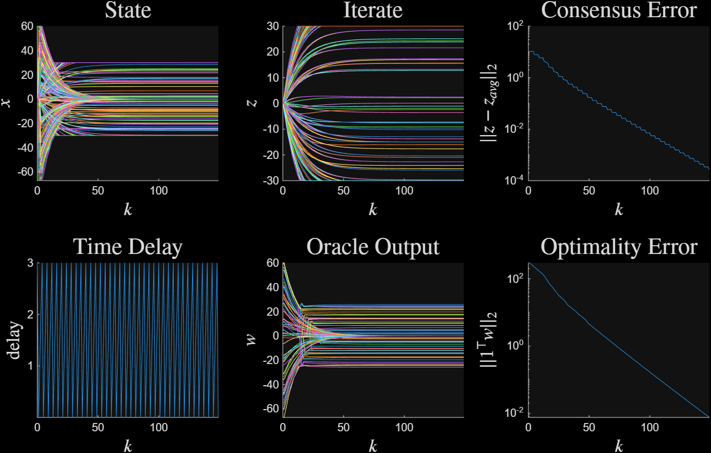
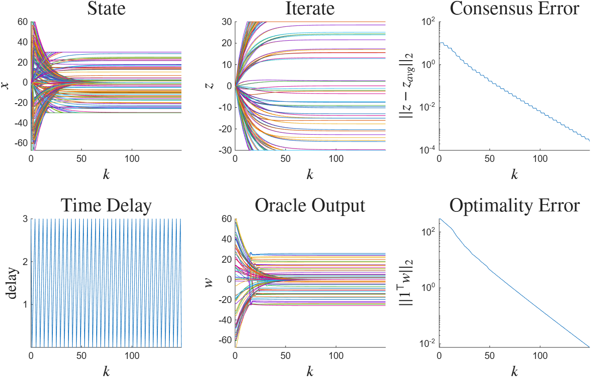
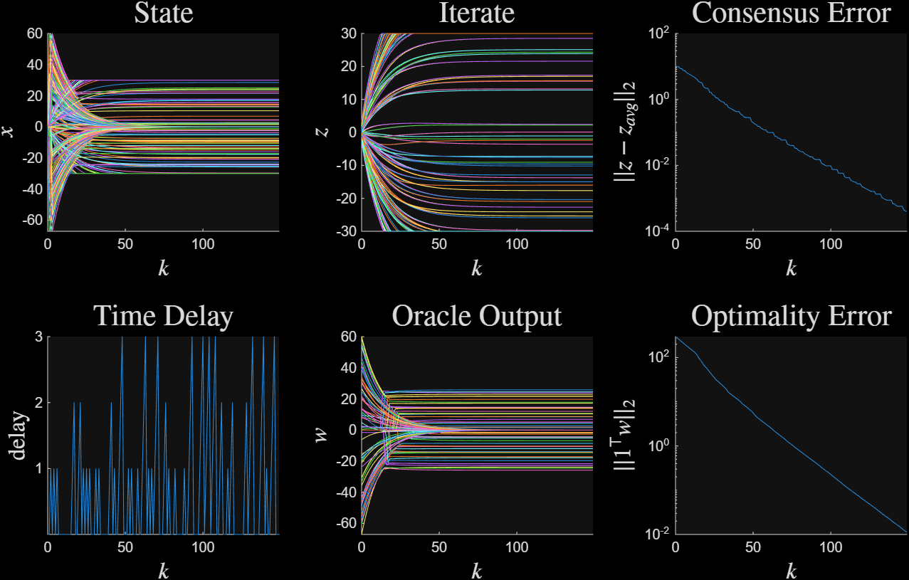
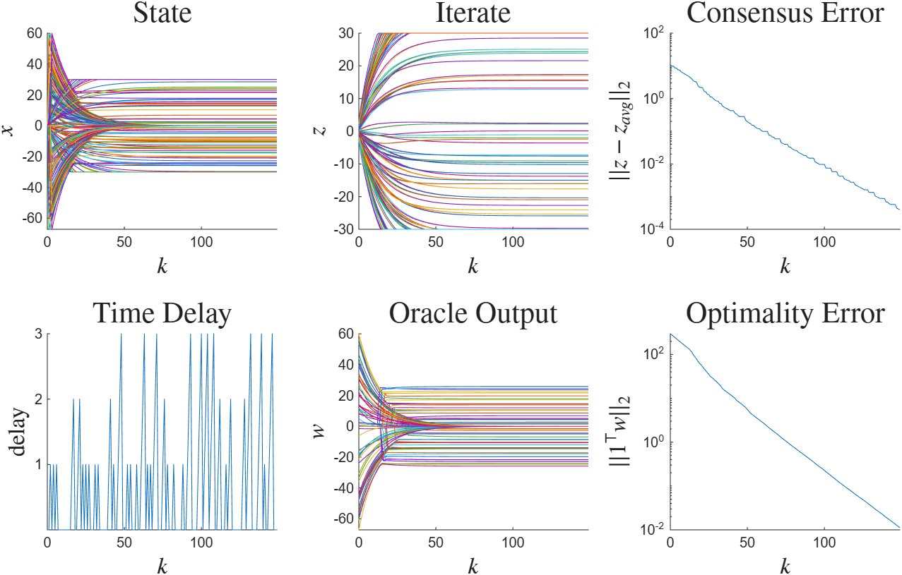
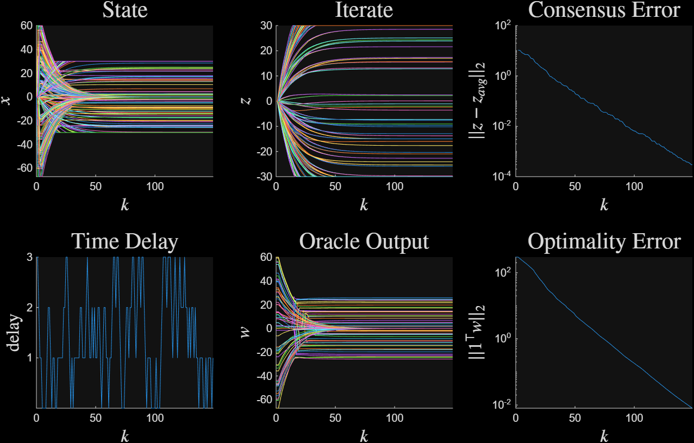
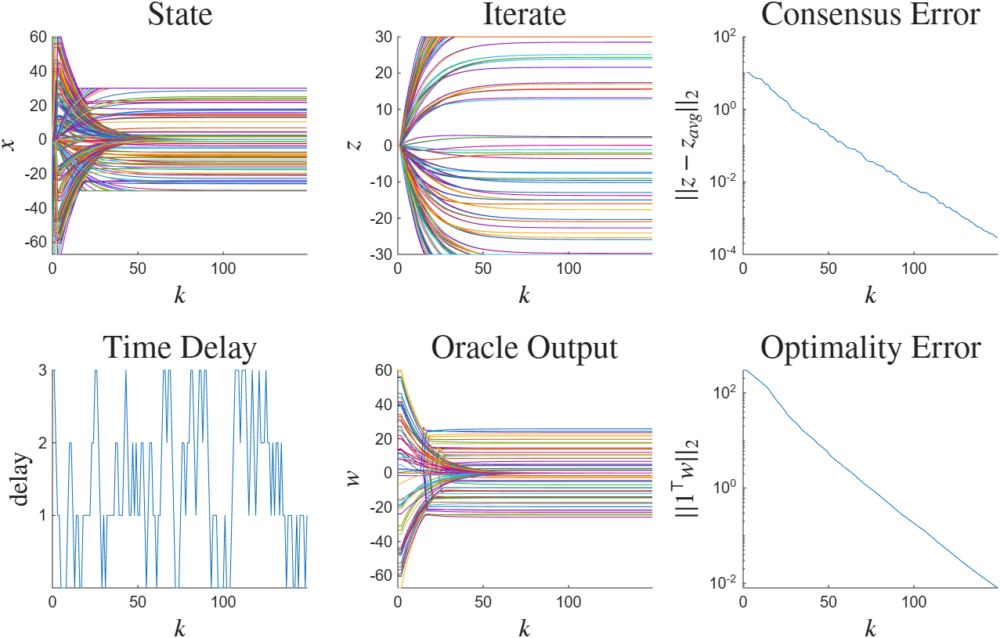

Time-Varying Delay#
This example simulates a Projected Gradient Descent algorithm subject to time-varying delays. We aim to solve the constrained optimization problem
where \(f\) is a convex quadratic with eigenvalues between \(m=1\) and \(L=1.5\).
A time-varying delay \(h(k)\) is introduced after evaluation of \(\nabla f\). The expression for PGD with time-delays is
The delay \(h(k)\) is bounded between 0 and 3 steps at all \(k \in \N\). It is temporally restricted according to the logics
Type |
Rule |
|---|---|
Periodic |
\(h(k)\) increases by 1, and drops to 0 if \(h(k)=0\). |
Snap |
\(h(k)\) either increases by 1 or drops to 0, but \(h(k+1)=0\) always holds if \(h(k)=3\). |
Contiguous |
\(h(k)\) increases by 1, stays the same, or decreases by 1, subject to the constraint \(h(k) \in [0, 3]\). |
The Snap logic is motivated by communication failures: PGD will use the same stale gradient until a successful transmission is received. Snap and Contiguous are nondeterministic switching logics, while Periodic is deterministic given \(h(0)\).
We solve the composite optimization problem using a nominal PGD algorithm with stepsize \(\gamma = 0.05\). All executions are performed starting at \(x_0=0\), and at a random initial delay \(h(0)\). Figure 1 plots the algorithm trajectory under periodic time-varying delays.

Figure 1 Periodic time delays#

Figure 1: Periodic time delays#
Figure 1 plots the algorithm trajectory under periodic time-varying delays.

Figure 2 Snap time delays#

Figure 2: Snap time delays#
Figure 3 plots the algorithm trajectory under contiguous time-varying delays.

Figure 3 Contiguous time delays#

Figure 2: Contiguous time delays#
1%time-varying delays
2rng(40, 'twister');
3d = 64;
4delay_max = 3;
5
6
7%% define the operators
8%generate the test quadratic
9m = 1; L = 1.5;
10Q = rand_quad(d, m, L);
11bstar = randi(101, [d, 1]) - 50;
12op1 = op_sim_quad(Q, bstar);
13
14%indicator function
15BOX = 30;
16op2 = op_sim_box(BOX);
17
18ops = {op1, op2};
19
20%% form the time-varying delay network
21
22%delay for oracle 1
23[Pprim, Gcon] = delay_primitives(0, 0:delay_max, 0, -1:1);
24Gsnap = delay_snap_graph(delay_max, 0);
25
26%no delay for oracle 2
27P0 = bridge_pass_through(1);
28
29%build the network by block diagonalization
30Nss = length(Gsnap);
31P_chain = cell(Nss, 1);
32for i = 1:Nss
33 P_chain{i} = blkdiag(Pprim{i}, P0);
34end
35
36network = genplant_poly(P_chain);
37
38%projected gradient descent
39gamma = 0.05;
40K = ss([1], [-gamma, -gamma], [1; 1], [0, 0; -gamma, -gamma],1);
41
42%form the systems
43sys_per = opt_system_periodic(ops, network, K);
44sys_snap = opt_system_switched(ops, network, K, Gsnap);
45sys_cont = opt_system_switched(ops, network, K, Gcon);
46
47
48%% begin simulation
49T = 150;
50sim_per = alg_sim(sys_per, d);
51sim_snap = alg_sim(sys_snap, d);
52sim_cont = alg_sim(sys_cont, d);
53
54
55sim_out_per = sim_per.sim(T);
56sim_out_snap = sim_snap.sim(T);
57sim_out_cont = sim_cont.sim(T);
58
59%% plot the signals
60plt_per = alg_plotter(sim_out_per);
61plt_per.plot({'x', 'z', 'res_z', 'delay', 'w', 'res_w'}, 10)
62
63plt_snap = alg_plotter(sim_out_snap);
64plt_snap.plot({'x', 'z', 'res_z', 'delay', 'w', 'res_w'}, 12)
65
66
67plt_cont = alg_plotter(sim_out_cont);
68plt_cont.plot({'x', 'z', 'res_z', 'delay', 'w', 'res_w'}, 11)
Introducing a time-varying delay before evaluation of \(\partial f\) as \(z_{k-h(k)}^1\) instead of \(w_{k-h(k)}^1\) fails the Regulator Equation requirement for algorithm convergence.